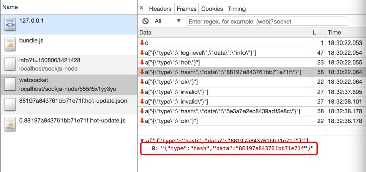
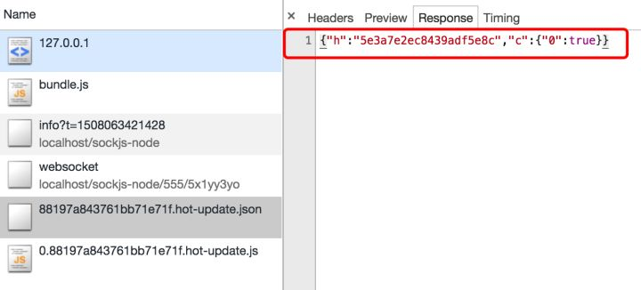
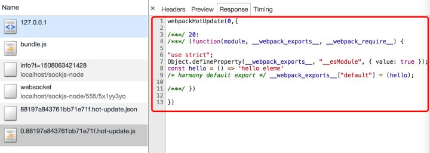

# Webpack HMR 原理解析（转载）
# 前言
本人平时学习及收集内容，欢迎参入一起讨论。
# 内容
Hot Module Replacement（以下简称 HMR）是 webpack 发展至今引入的最令人兴奋的特性之一 ，当你对代码进行修改并保存后，webpack 将对代码重新打包，并将新的模块发送到浏览器端，浏览器通过新的模块替换老的模块，这样在不刷新浏览器的前提下就能够对应用进行更新。例如，在开发 Web 页面过程中，当你点击按钮，出现一个弹窗的时候，发现弹窗标题没有对齐，这时候你修改 CSS 样式，然后保存，在浏览器没有刷新的前提下，标题样式发生了改变。感觉就像在 Chrome 的开发者工具中直接修改元素样式一样。
本篇文章不是告诉你怎么使用 HMR，如果你对 HMR 依然感觉到陌生，建议先阅读官网 HMR 指南，上面有 HMR 最简单的用例，我会等着你回来的。
# 为什么需要 HMR
在 webpack HMR 功能之前，已经有很多 live reload 的工具或库，比如live-server，这些库监控文件的变化，然后通知浏览器端刷新页面，那么我们为什么还需要 HMR 呢？答案其实在上文中已经提及一些。
- live reload 工具并不能够保存应用的状态（states），当刷新页面后，应用之前状态丢失，还是上文中的例子，点击按钮出现弹窗，当浏览器刷新后，弹窗也随即消失，要恢复到之前状态，还需再次点击按钮。而 webpack HMR 则不会刷新器，而是运行时对模块进行热替换，保证了应用状态不会丢失，提升了开发效率。
- 在古老的开发流程中，我们可能需要手动运行命令对代码进行打包，并且打包后再手动刷新浏览器页面，而这一系列重复的工作都可以通过 HMR 工作流来自动化完成，让更多的精力投入到业务中，而不是时间浪费在重复的工作上。
- HMR 兼容市面上大多前端框架或库，比如React Hot Loader，Vue-loader，能够监听 React 或者 Vue 组件的变化，实时将最新的组件更新到浏览器端。Elm Hot Loader支持通过 webpack 对 Elm 语言代码进行转译并打包，当然它也实现了 HMR 功能。
# HMR 的工作原理图解
初识 HMR 的时候觉得其很神奇，一直有一些疑问萦绕在脑海。
- webpack 可以将不同的模块打包成
bundle文件或者几个chunk文件，但是当我通过webpack HMR进行开发的过程中，我并没有在我的 dist 目录中找到 webpack 打包好的文件，它们去哪呢？ - 通过查看webpack-dev-server的 package.json 文件，我们知道其依赖于webpack-dev-middleware库，那 webpack-dev-middleware 在 HMR 过程中扮演什么角色？
- 使用 HMR 的过程中，通过 Chrome 开发者工具我知道浏览器是通过
websocket和webpack-dev-server进行通信的，但是websocket的message中并没有发现新模块代码。打包后的新模块又是通过什么方式发送到浏览器端的呢？为什么新的模块不通过 websocket 随消息一起发送到浏览器端呢？为什么新的模块不通过 websocket 随消息一起发送到浏览器端呢？ - 浏览器拿到最新的模块代码，HMR 又是怎么将老的模块替换成新的模块，在替换的过程中怎样处理模块之间的依赖关系？
- 当模块的热替换过程中，如果替换模块失败，有什么回退机制吗？
带着上面的问题，于是决定深入到 webpack 源码，寻找 HMR 底层的奥秘。

图一：HMR 工作流程图解
上图是 webpack 配合webpack-dev-server进行应用开发的模块热更新流程图。
- 上图底部红色框内是服务端，而上面的橙色框是浏览器端。
- 绿色的方框是 webpack 代码控制的区域。蓝色方框是
webpack-dev-server代码控制的区域，洋红色的方框是文件系统，文件修改后的变化就发生在这，而青色的方框是应用本身。
上图显示了我们修改代码到模块热更新完成的一个周期，通过深绿色的阿拉伯数字符号已经将 HMR 的整个过程标识了出来。
- 第一步，在 webpack 的 watch 模式下，文件系统中某一个文件发生修改，webpack 监听到文件变化，根据配置文件对模块重新编译打包，并将打包后的代码通过简单的 JavaScript 对象保存在内存中。
- 第二步是 webpack-dev-server 和 webpack 之间的接口交互，而在这一步，主要是 dev-server 的中间件 webpack-dev-middleware 和 webpack 之间的交互，webpack-dev-middleware 调用 webpack 暴露的 API 对代码变化进行监控，并且告诉 webpack，将代码打包到内存中。
- 第三步是 webpack-dev-server 对文件变化的一个监控，这一步不同于第一步，并不是监控代码变化重新打包。当我们在配置文件中配置了devServer.watchContentBase为 true 的时候，Server 会监听这些配置文件夹中静态文件的变化，变化后会通知浏览器端对应用进行 live reload。注意，这儿是浏览器刷新，和 HMR 是两个概念。
- 第四步也是 webpack-dev-server 代码的工作，该步骤主要是通过sockjs在浏览器端和服务端之间建立一个 websocket 长连接，将 webpack 编译打包的各个阶段的状态信息告浏览器端，同时也包括第三步中 Server 监听静态文件变化的信息。浏览器端根据这些 socket 消息进行不同的操作。当然服务端传递的最主要信息还是新模块的 hash 值，后面的步骤根据这一 hash 值来进行模块热替换。
- webpack-dev-server/client 端并不能够请求更新的代码，也不会执行热更模块操作，而把这些工作又交回给了 webpack，webpack/hot/dev-server 的工作就是根据 webpack-dev-server/client 传给它的信息以及 dev-server 的配置决定是刷新浏览器呢还是进行模块热更新。当然如果仅仅是刷新浏览器，也就没有后面那些步骤了。
- HotModuleReplacement.runtime 是客户端 HMR 的中枢，它接收到上一步传递给他的新模块的 hash 值，它通过 JsonpMainTemplate.runtime 向 server 端发送 ajax 请求，服务端返回一个 json，该 json 包含了所有要更新的模块的 hash 值，获取到更新列表后，该模块再次通过 jsonp 请求，获取到最新的模块代码。这就是上图中 7、8、9 步骤。
- 而第 10 步是决定 HMR 成功与否的关键步骤，在该步骤中，HotModulePlugin 将会对新旧模块进行对比，决定是否更新模块，在决定更新模块后，检查模块之间的依赖关系，更新模块的同时更新模块间的依赖引用。
- 最后一步，当 HMR 失败后，回退到 live reload 操作，也就是进行浏览器刷新来获取最新打包代码。
# 运用 HMR 的简单例子
在上一个部分，通过一张 HMR 流程图，简要的说明了 HMR 进行模块热更新的过程。当然你可能感觉还是很迷糊，对上面出现的一些英文名词也可能比较陌生（上面这些英文名词代表着代码仓库或者仓库中的文件模块），没关系，在这一部分，我将通过一个最简单最纯粹的例子，通过分析 wepack 及 webpack-dev-server 源码详细说明各个库在 HMR 过程中的具体职责。
在开始这个例子之前简单对这个仓库文件进行下说明，仓库中包含文件如下：
--hello.js
--index.js
--index.html
--package.json
--webpack.config.js
2
3
4
5
项目中包含两个 js 文件，项目入口文件是 index.js 文件，hello.js 文件是 index.js 文件一个依赖，js 代码如你所见，将在 body 元素中添加一个包含hello world的 div 元素。
webpack.config.js 的配置如下：
const path = require('path')
const webpack = require('webpack')
module.exports = {
entry: './index.js',
output: {
filename: 'bundle.js',
path: path.join(__dirname, '/')
},
devServer: {
hot: true
}
}
2
3
4
5
6
7
8
9
10
11
12
值得一提的是，在上面的配置中并没有配置 HotModuleReplacementPlugin，原因在于当我们设置 devServer.hot 为 true 后，并且在 package.json 文件中添加如下的 script 脚本：
"start": "webpack-dev-server --hot --open"
添加——hot 配置项后，devServer 会告诉 webpack 自动引入 HotModuleReplacementPlugin 插件，而不用我们再手动引入了。
进入到仓库目录，npm install 安装依赖后，运行 npm start 就启动了 devServer 服务，访问http://127.0.0.1:8080就可以看到我们的页面了。
下面将进入到关键环节，在简单例子中，我将修改 hello.js 文件中的代码，在源码层面上来分析 HMR 的具体运行流程，当然我还是将按照上面图解来分析。修改代码如下：（以下所有代码块首行就是该文件的路径）
// hello.js
- const hello = () => 'hello world' // 将 hello world 字符串修改为 hello eleme
+ const hello = () => 'hello eleme'0
2
3
页面中 hello world 文件随即变成 hello eleme。
第一步：webpack 对文件系统进行 watch 打包到内存中
webpack-dev-middleware 调用 webpack 的 api 对文件系统 watch，当 hello.js 文件发生改变后，webpack 重新对文件进行编译打包，然后保存到内存中。
// webpack-dev-middleware/lib/Shared.js
if(!options.lazy) {
var watching = compiler.watch(options.watchOptions, share.handleCompilerCallback);
context.watching = watching;
}
2
3
4
5
你可能会疑问了，为什么 webpack 没有将文件直接打包到 output.path 目录下呢？文件又去了哪儿？原来 webpack 将 bundle.js 文件打包到了内存中，不生成文件的原因就在于访问内存中的代码比访问文件系统中的文件更快，而且也减少了代码写入文件的开销，这一切都归功于memory-fs，memory-fs 是 webpack-dev-middleware 的一个依赖库，webpack-dev-middleware 将 webpack 原本的 outputFileSystem 替换成了 MemoryFileSystem 实例，这样代码就将输出到内存中，webpack-dev-middleware 中该部分源码如下：
// webpack-dev-middleware/lib/Shared.js
var isMemoryFs = !compiler.compilers && compiler.outputFileSystem instanceof MemoryFileSystem;
if(isMemoryFs) {
fs = compiler.outputFileSystem;
} else {
fs = compiler.outputFileSystem = new MemoryFileSystem();
}
2
3
4
5
6
7
首先判断当前 fileSystem 是否已经是 MemoryFileSystem 的实例，如果不是，用 MemoryFileSystem 的实例替换 compiler 之前 outputFileSystem。这样 bundle.js 文件代码就作为一个简单 javascript 对象保存在了内存中，当浏览器请求 bundle.js 文件时，devServer 就直接去内存中找到上面保存的 javascript 对象返回给浏览器端。
第二步：devServer 通知浏览器端文件发生改变
在这一阶段，sockjs 是服务器和浏览器端之间的桥梁，在启动 devServer 的时候，sockjs 在服务端和浏览器端建立了一个 webSocket 长连接，以便将 webpack 编译和打包的各个阶段状态告知浏览器，最关键的步骤还是 webpack-dev-server 调用 webpack api 监听 compile 的 done 事件，当 compile 完成后，webpack-dev-server 通过_sendStatus方法将编译打包后的新模块 hash 值发送到浏览器端。
// webpack-dev-server/lib/Server.js
compiler.plugin('done', (stats) => {
// stats.hash 是最新打包文件的 hash 值
this._sendStats(this.sockets, stats.toJson(clientStats));
this._stats = stats;
});
...
Server.prototype._sendStats = function (sockets, stats, force) {
if (!force && stats &&
(!stats.errors || stats.errors.length === 0) && stats.assets &&
stats.assets.every(asset => !asset.emitted)
) { return this.sockWrite(sockets, 'still-ok'); }
// 调用 sockWrite 方法将 hash 值通过 websocket 发送到浏览器端
this.sockWrite(sockets, 'hash', stats.hash);
if (stats.errors.length > 0) { this.sockWrite(sockets, 'errors', stats.errors); }
else if (stats.warnings.length > 0) { this.sockWrite(sockets, 'warnings', stats.warnings); } else { this.sockWrite(sockets, 'ok'); }
};
2
3
4
5
6
7
8
9
10
11
12
13
14
15
16
17
第三步：webpack-dev-server/client 接收到服务端消息做出响应
可能你又会有疑问，我并没有在业务代码里面添加接收 websocket 消息的代码，也没有在 webpack.config.js 中的 entry 属性中添加新的入口文件，那么 bundle.js 中接收 websocket 消息的代码从哪来的呢？原来是 webpack-dev-server 修改了 webpack 配置中的 entry 属性，在里面添加了 webpack-dev-client 的代码，这样在最后 bundle.js 文件中就会有接收 websocket 消息的代码了。
webpack-dev-server/client 当接收到 type 为 hash 消息后会将 hash 值暂存起来，当接收到 type 为 ok 的消息后对应用执行 reload 操作，如下图所示，hash 消息是在 ok 消息之前。

图二：websocket 接收 dev-server 通过 sockjs 发送到浏览器端的消息列表
在 reload 操作中，webpack-dev-server/client 会根据 hot 配置决定是刷新浏览器还是对代码进行热更新（HMR）。代码如下：
/ webpack-dev-server/client/index.js
hash: function msgHash(hash) {
currentHash = hash;
},
ok: function msgOk() {
// ...
reloadApp();
},
// ...
function reloadApp() {
// ...
if (hot) {
log.info('[WDS] App hot update...');
const hotEmitter = require('webpack/hot/emitter');
hotEmitter.emit('webpackHotUpdate', currentHash);
// ...
} else {
log.info('[WDS] App updated. Reloading...');
self.location.reload();
}
}
2
3
4
5
6
7
8
9
10
11
12
13
14
15
16
17
18
19
20
21
如上面代码所示，首先将 hash 值暂存到 currentHash 变量，当接收到 ok 消息后，对 App 进行 reload。如果配置了模块热更新，就调用 webpack/hot/emitter 将最新 hash 值发送给 webpack，然后将控制权交给 webpack 客户端代码。如果没有配置模块热更新，就直接调用 location.reload 方法刷新页面。
第四步：webpack 接收到最新 hash 值验证并请求模块代码
在这一步，其实是 webpack 中三个模块(三个文件，后面英文名对应文件路径)之间配合的结果，首先是 webpack/hot/dev-server 监听第三步 webpack-dev-server/client 发送的webpackHotUpdate消息，调用 webpack/lib/HotModuleReplacement.runtime（简称 HMR runtime）中的 check 方法，检测是否有新的更新，在 check 过程中会利用 webpack/lib/JsonpMainTemplate.runtime（简称 jsonp runtime）中的两个方法hotDownloadUpdateChunk和hotDownloadManifest，第二个方法是调用 AJAX 向服务器端请求是否有更新的文件，如果有将发更新的文件列表返回浏览器，而第一个方法是通过 jsonp 请求最新的模块代码然后将代码返回给 HMR runtime，HMR runtime 会根据返回的新模块代码做进一步处理，可能是刷新页面，也可能是对模块进行热更新。

图三：hotDownloadManifest 方法获取更新文件列表

图四：hotDownloadUpdateChunk 获取到更新的新模块代码
如上两图所示，值得注意的是，两次请求的都是使用上一次的 hash 值拼接的请求文件名，hotDownloadManifest 方法返回的是最新的 hash 值，hotDownloadUpdateChunk 方法返回的就是最新 hash 值对对应的代码块。然后将新的代码块返回给 HMR runtime，进行模块热更新。
还记得HMR 的工作原理图解中的问题 3 吗？为什么更新模块的代码不直接在第三步通过 websocket 发送到浏览器端，而是通过 jsonp 来获取呢？我的理解是功能块的解耦，各个模块各司其职，dev-server/client 只负责消息的传递而不负责新模块的获取，而这些工作应该有 HMR runtime 来完成，HMR runtime 才应该是获取新代码的地方。再就是因为不使用 webpack-dev-server 的前提，使用 webpack-hot-middleware 和 webpack 配合也可以完成模块热更新流程，在使用 webpack-hot-middleware 中有件有意思的事，它没有使用 websocket，而是使用的 EventSource。综上所述，HMR 的工作流中，不应该把新模块代码放在 websocket 消息中。
第五步：HotModuleReplacement.runtime 对模块进行热更新
这一步是整个模块热更新（HMR）的关键步骤，而且模块热更新都是发生在 HMR runtime 中的 hotApply 方法中，这儿我不打算把 hotApply 方法整个源码贴出来了，因为这个方法包含 300 多行代码，我将只摘取关键代码片段。
// webpack/lib/HotModuleReplacement.runtime
function hotApply() {
// ...
var idx;
var queue = outdatedModules.slice();
while(queue.length > 0) {
moduleId = queue.pop();
module = installedModules[moduleId];
// ...
// remove module from cache
delete installedModules[moduleId];
// when disposing there is no need to call dispose handler
delete outdatedDependencies[moduleId];
// remove "parents" references from all children
for(j = 0; j < module.children.length; j++) {
var child = installedModules[module.children[j]];
if(!child) continue;
idx = child.parents.indexOf(moduleId);
if(idx >= 0) {
child.parents.splice(idx, 1);
}
}
}
// ...
// insert new code
for(moduleId in appliedUpdate) {
if(Object.prototype.hasOwnProperty.call(appliedUpdate, moduleId)) {
modules[moduleId] = appliedUpdate[moduleId];
}
}
// ...
}
2
3
4
5
6
7
8
9
10
11
12
13
14
15
16
17
18
19
20
21
22
23
24
25
26
27
28
29
30
31
32
从上面 hotApply 方法可以看出，模块热替换主要分三个阶段，第一个阶段是找出 outdatedModules 和 outdateDependencies，这儿我没有贴这部分代码，有兴趣可以自己阅读源码。第二个阶段从缓存中删除过期的模块和依赖，如下：
delete installedModules[moduleId]; delete outdatedDependencies[moduleId];
第三个阶段是将新的模块添加到 modules 中，当下次调用webpack_require(webpack 重写的 require 方法)方法的时候，就是获取到了新的模块代码了。
模块热更新的错误处理，如果在热更新过程出现错误，热更新将回退到刷新浏览器，这部分代码在 dev-server 代码中，简要代码如下：
module.hot.check(true).then(function(updatedModules) {
if(!updatedModules) {
return window.location.reload();
}
// ...
}).catch(function(err) {
var status = module.hot.status();
if(["abort", "fail"].indexOf(status) >= 0) {
window.location.reload();
}
});
2
3
4
5
6
7
8
9
10
11
dev-server 先验证是否有更新，没有代码更新的话，重载浏览器。如果在 hotApply 的过程中出现 abort 或者 fail 错误，也进行重载浏览器。
第六步：业务代码需要做些什么？
当用新的模块代码替换老的模块后，但是我们的业务代码并不能知道代码已经发生变化，也就是说，当 hello.js 文件修改后，我们需要在 index.js 文件中调用 HMR 的 accept 方法，添加模块更新后的处理函数，及时将 hello 方法的返回值插入到页面中。代码如下：
// index.js
if(module.hot) {
module.hot.accept('./hello.js', function() {
div.innerHTML = hello()
})
}
2
3
4
5
6
这样就是整个 HMR 的工作流程了。
# 参考资料
# 联系作者
平凡世界，贵在坚持。